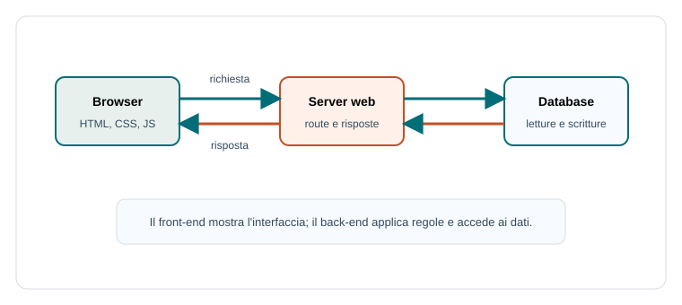

Capitoletto 2
Applicazioni Web
Un'applicazione web è un sistema usato tramite browser e raggiunto attraverso la rete. Dietro una pagina ci sono richieste HTTP, server, codice lato client, codice lato server, dati e controlli di sicurezza.
Obiettivi della lezione
- Descrivere il ruolo di browser e server web.
- Distinguere front-end e back-end.
- Capire differenza tra pagine statiche e dinamiche.
- Collegare sessioni, cookie, autenticazione e autorizzazione.
- Riconoscere rischi di sicurezza nelle applicazioni web.
Browser e server web
Il browser è il client: invia richieste e interpreta la risposta. Il server web riceve richieste HTTP o HTTPS, sceglie quale risorsa restituire e può eseguire codice per generare contenuti dinamici.

Front-end e back-end
Il front-end è la parte visibile all'utente: HTML, CSS, JavaScript, form, pulsanti, tabelle e messaggi. Il back-end è la parte sul server: riceve richieste, applica regole, controlla permessi, accede ai dati e prepara risposte.
| Parte | Responsabilità | Esempio |
|---|---|---|
| Front-end | Interfaccia e interazione | Modulo per inserire una prenotazione. |
| Back-end | Regole e dati | Controlla se il laboratorio è libero. |
| Database | Persistenza | Salva utenti, prenotazioni e orari. |
Pagine statiche e dinamiche
Una pagina statica è servita come file già pronto. Una pagina dinamica viene costruita o aggiornata in base ai dati, all'utente o alla richiesta. Molti siti combinano entrambe le tecniche.
Pagina statica: /regolamento.html
sempre uguale per tutti
Pagina dinamica: /voti/studente
mostra dati diversi in base all'utente autenticatoSessioni e autenticazione
HTTP è spesso usato come protocollo stateless: ogni richiesta è separata. Per ricordare che un utente ha fatto login, le applicazioni usano sessioni, cookie o token. L'autenticazione verifica l'identità; l'autorizzazione decide che cosa l'utente può fare.
Sicurezza di base
Un'applicazione web è esposta a utenti e rete, quindi deve controllare input, permessi e comunicazioni. HTTPS protegge i dati in transito; la validazione riduce messaggi malformati; il controllo lato server impedisce di fidarsi solo del browser.
- Validare sempre i dati ricevuti dai form.
- Controllare i permessi sul server.
- Usare HTTPS per credenziali e dati sensibili.
- Gestire errori senza mostrare informazioni interne.
- Proteggere sessioni e token.
Esempio guidato
In una piattaforma compiti, lo studente carica un file dal browser. Il server verifica login e permessi, salva il file, registra la consegna nel database e restituisce una conferma. Il browser mostra il risultato, ma la decisione valida avviene sul server.
Esercizi guidati
- Indica front-end, back-end e database in un registro elettronico.
- Scrivi un esempio di pagina statica e uno di pagina dinamica.
- Spiega perché i controlli di sicurezza non devono stare solo nel browser.
Domande con risposta semplice
Che cosa fa il browser?
Invia richieste, riceve risposte e interpreta HTML, CSS e JavaScript per mostrare l'interfaccia.
Che cosa fa il back-end?
Applica regole, controlla permessi, accede ai dati e prepara risposte per il client.
Perché servono le sessioni?
Per ricordare informazioni sull'utente tra richieste diverse, per esempio dopo il login.
Per ripassare
Un'applicazione web unisce client, server e dati. Quando la studi chiediti sempre dove avviene ogni responsabilità: interfaccia, regole, controlli e persistenza.